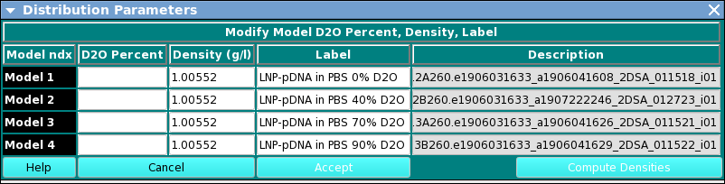
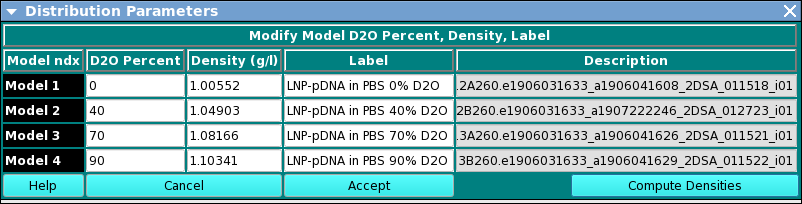

Manual
Manual
Manual
Manual
An option in UltraScan III US_Density_Match, this dialog allows specifying parameters associated with each model distribution.
The dialog presents a row for each model selected in the calling Density Matching main window. In each model row, the user may add or change the value for (1) D2O (heavy water) percent; (2) density; or (3) model label. After setting all percent values, the Compute Densities button causes computation of the densities for non-zero-percent models, based on the zero-percent model density value. Once all model values are set, the Accept button closes the dialog and returns the values associated with each model.
Upon entry, the dialog appears as follows.

After completion of parameter setting, the dialog will appear similar to this:
